Plot a sample variogram, and possibly a fitted model
plot.gstatVariogram.RdCreates a variogram plot
Usage
# S3 method for gstatVariogram
plot(x, model = NULL, ylim, xlim, xlab = "distance",
ylab = attr(x, "what"), panel = vgm.panel.xyplot, multipanel = TRUE,
plot.numbers = FALSE, scales, ids = x$id, group.id = TRUE, skip,
layout, ...)
# S3 method for variogramMap
plot(x, np = FALSE, skip, threshold, ...)
# S3 method for StVariogram
plot(x, model = NULL, ..., col = bpy.colors(), xlab, ylab,
map = TRUE, convertMonths = FALSE, as.table = TRUE, wireframe = FALSE,
diff = FALSE, all = FALSE)Arguments
- x
object obtained from the method variogram, possibly containing directional or cross variograms, space-time variograms and variogram model information
- model
in case of a single variogram: a variogram model, as obtained from vgm or fit.variogram, to be drawn as a line in the variogram plot; in case of a set of variograms and cross variograms: a list with variogram models; in the spatio-temporal case, a single or a list of spatio-temporal models that will be plotted next to each other for visual comparison.
- ylim
numeric; vector of length 2, limits of the y-axis
- xlim
numeric; vector of length 2, limits of the x-axis
- xlab
character; x-axis label
- ylab
character; y-axis label
- panel
panel function
- multipanel
logical; if TRUE, directional variograms are plotted in different panels, if FALSE, directional variograms are plotted in the same graph, using color, colored lines and symbols to distinguish them
- plot.numbers
logical or numeric; if TRUE, plot number of point pairs next to each plotted semivariance symbol, if FALSE these are omitted. If numeric, TRUE is assumed and the value is passed as the relative distance to be used between symbols and numeric text values (default 0.03).
- scales
optional argument that will be passed to
xyplotin case of the plotting of variograms and cross variograms; use the valuelist(relation = "same")if y-axes need to share scales- ids
ids of the data variables and variable pairs
- group.id
logical; control for directional multivariate variograms: if TRUE, panels divide direction and colors indicate variables (ids), if FALSE panels divide variables/variable pairs and colors indicate direction
- skip
logical; can be used to arrange panels, see
xyplot- layout
integer vector; can be used to set panel layout: c(ncol,nrow)
- np
logical (only for plotting variogram maps); if TRUE, plot number of point pairs, if FALSE plot semivariances
- threshold
semivariogram map values based on fewer point pairs than threshold will not be plotted
- ...
any arguments that will be passed to the panel plotting functions (such as
auto.keyin examples below)- col
colors to use
- map
logical; if TRUE, plot space-time variogram map
- convertMonths
logical; if TRUE,
yearmontime lags will be unit converted and plotted as (integer) months, and no longer match the numeric representation ofyearmon, which has years as unit- as.table
controls the plotting order for multiple panels, see
xyplotfor details.- wireframe
logical; if TRUE, produce a wireframe plot
- diff
logical; if TRUE, plot difference between model and sample variogram; ignores
all.- all
logical; if TRUE, plot sample and model variogram(s) in single wireframes.
Details
Please note that in the spatio-temporal case the levelplot and wireframe plots use the spatial distances averaged for each time lag avgDist. For strongly varying spatial locations over time, please check the distance columns dist and avgDist of the spatio-temporal sample variogram. The lattice::cloud function is one option to plot irregular 3D data.
Note
currently, plotting models and/or point pair numbers is not supported when a variogram is both directional and multivariable; also, three-dimensional directional variograms will probably not be displayed correctly.
Examples
library(sp)
data(meuse)
coordinates(meuse) = ~x+y
vgm1 <- variogram(log(zinc)~1, meuse)
plot(vgm1)
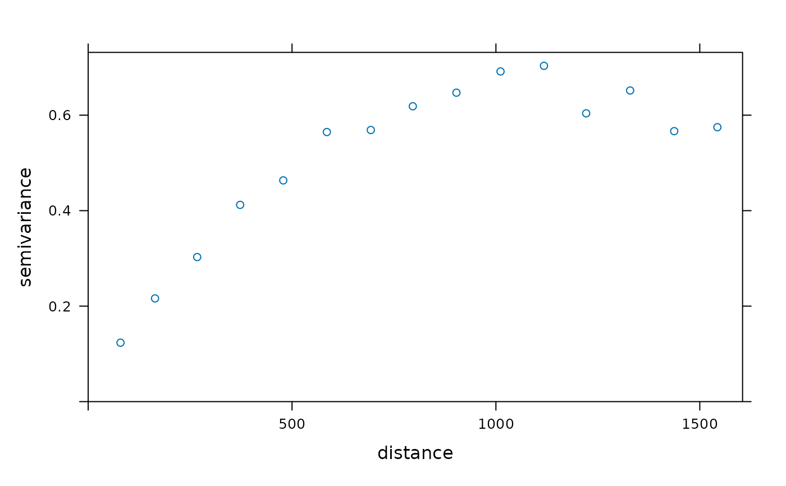
model.1 <- fit.variogram(vgm1,vgm(1,"Sph",300,1))
plot(vgm1, model=model.1)
 plot(vgm1, plot.numbers = TRUE, pch = "+")
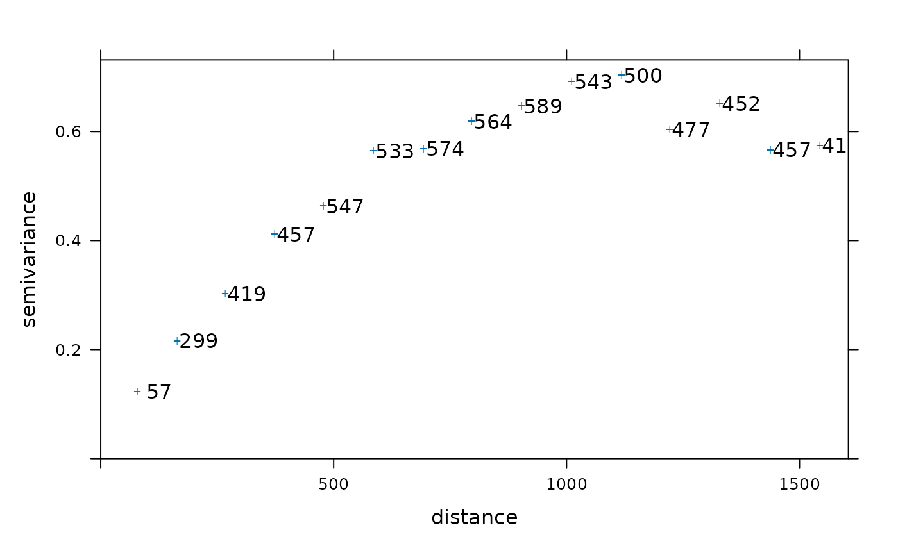
vgm2 <- variogram(log(zinc)~1, meuse, alpha=c(0,45,90,135))
plot(vgm2)
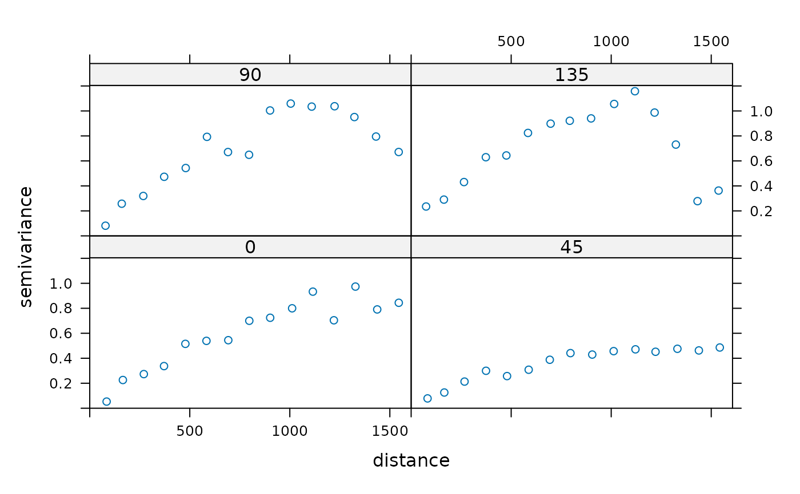
# the following demonstrates plotting of directional models:
model.2 <- vgm(.59,"Sph",926,.06,anis=c(0,0.3))
plot(vgm2, model=model.2)
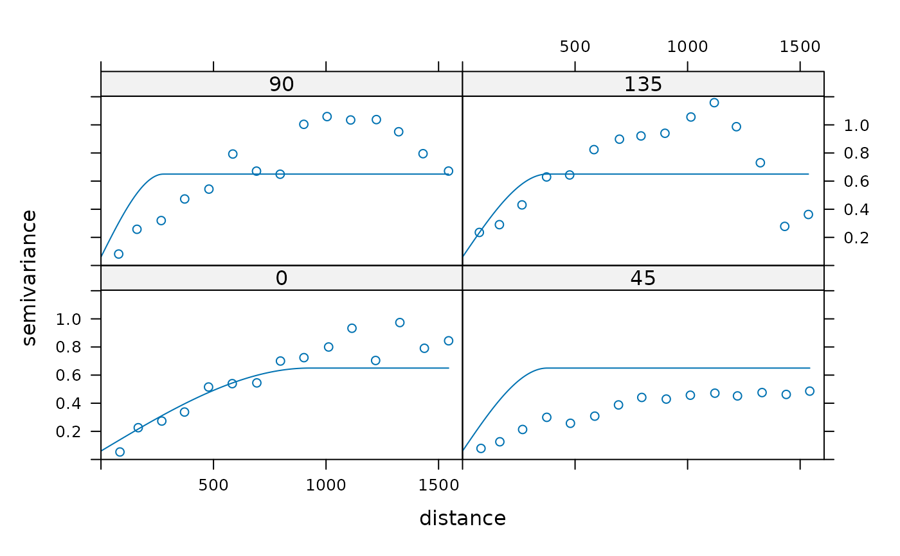
g = gstat(NULL, "zinc < 200", I(zinc<200)~1, meuse)
g = gstat(g, "zinc < 400", I(zinc<400)~1, meuse)
g = gstat(g, "zinc < 800", I(zinc<800)~1, meuse)
# calculate multivariable, directional variogram:
v = variogram(g, alpha=c(0,45,90,135))
plot(v, group.id = FALSE, auto.key = TRUE) # id and id pairs panels
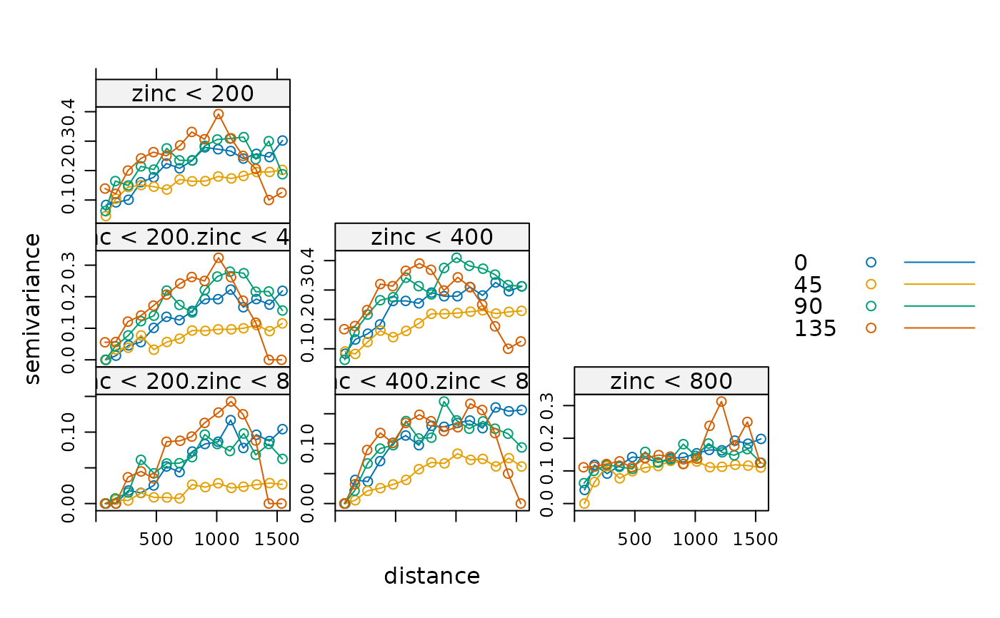
plot(v, group.id = TRUE, auto.key = TRUE) # direction panels
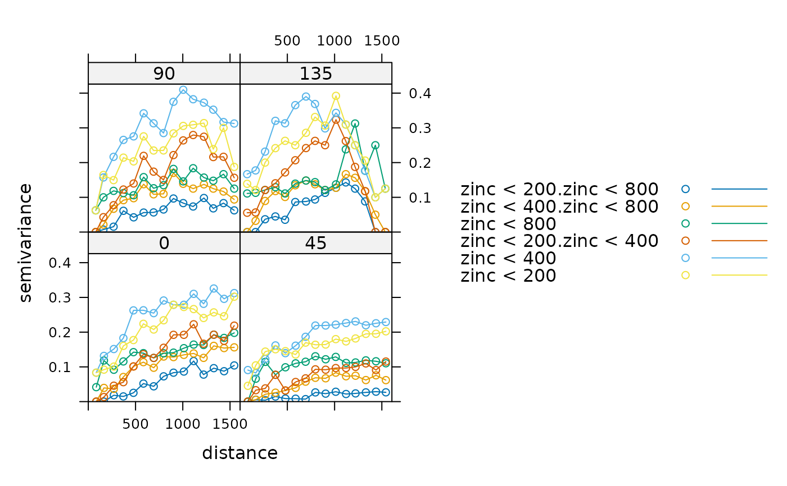
# variogram maps:
plot(variogram(g, cutoff=1000, width=100, map=TRUE),
main = "(cross) semivariance maps")
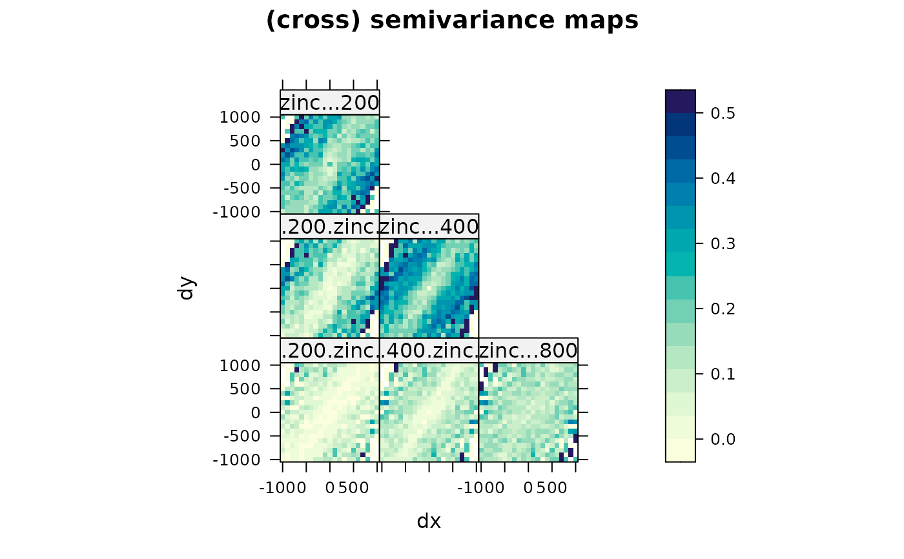
plot(variogram(g, cutoff=1000, width=100, map=TRUE), np=TRUE,
main = "number of point pairs")
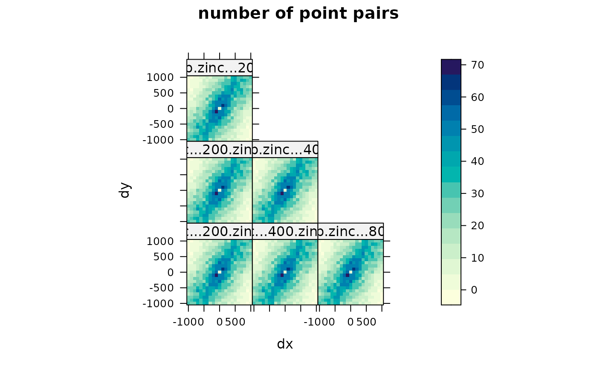
plot(vgm1, plot.numbers = TRUE, pch = "+")
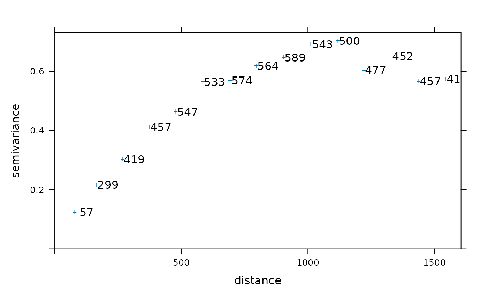
vgm2 <- variogram(log(zinc)~1, meuse, alpha=c(0,45,90,135))
plot(vgm2)
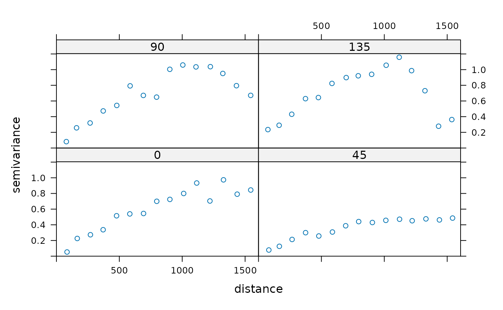
# the following demonstrates plotting of directional models:
model.2 <- vgm(.59,"Sph",926,.06,anis=c(0,0.3))
plot(vgm2, model=model.2)
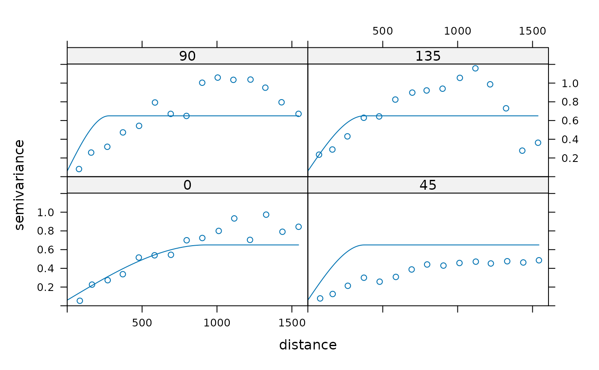
g = gstat(NULL, "zinc < 200", I(zinc<200)~1, meuse)
g = gstat(g, "zinc < 400", I(zinc<400)~1, meuse)
g = gstat(g, "zinc < 800", I(zinc<800)~1, meuse)
# calculate multivariable, directional variogram:
v = variogram(g, alpha=c(0,45,90,135))
plot(v, group.id = FALSE, auto.key = TRUE) # id and id pairs panels
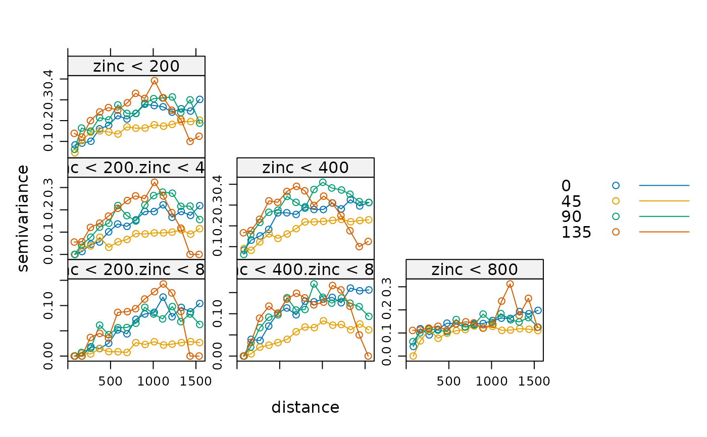
plot(v, group.id = TRUE, auto.key = TRUE) # direction panels
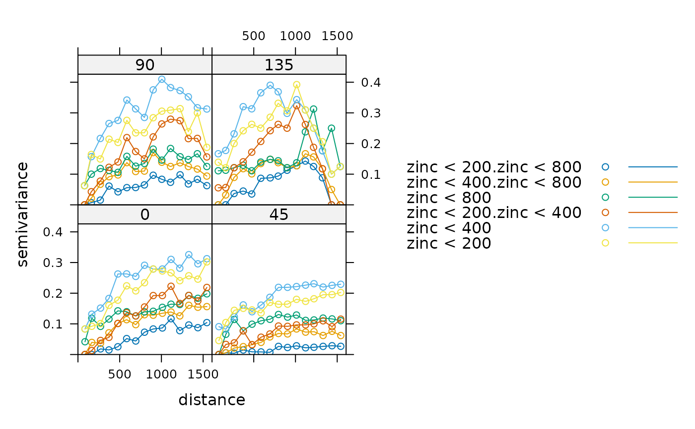
# variogram maps:
plot(variogram(g, cutoff=1000, width=100, map=TRUE),
main = "(cross) semivariance maps")
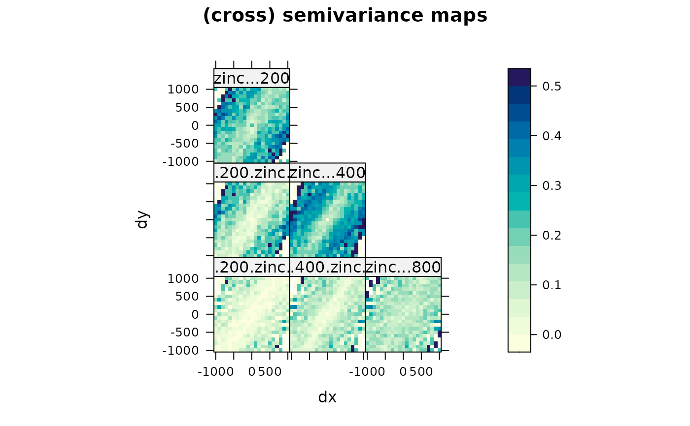
plot(variogram(g, cutoff=1000, width=100, map=TRUE), np=TRUE,
main = "number of point pairs")
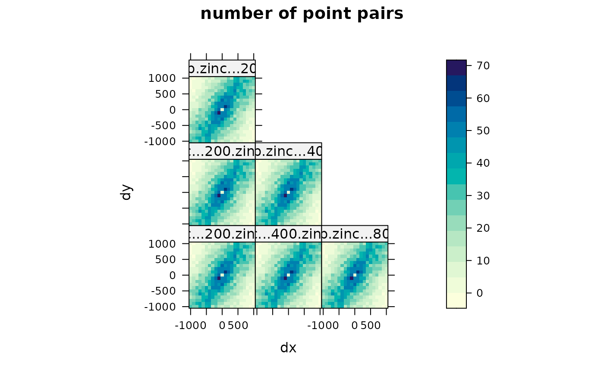